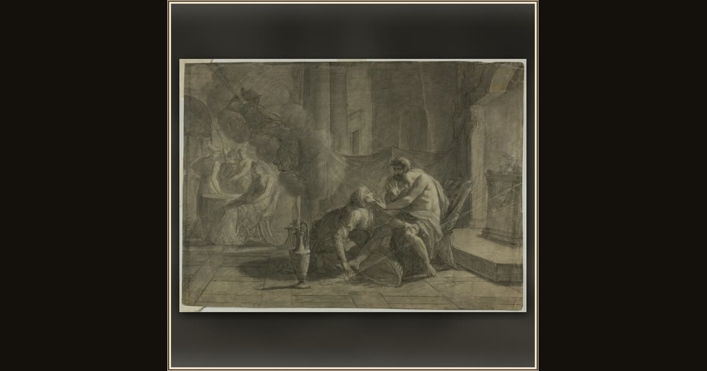

Odysseus and Eurycleia
Possibly Andrea Appiani the elder (Italian, 1754-1817), or an unknown artist (French, 18th century), in the style of Anne-Louis Girodet de Roucy-Trioson (French, 1767-1824) · n.d. · The Art Institute of Chicago · Chicago, USA
The old nurse Eurycleia washes the stranger’s feet and feels the scar she knows — the quiet moment she recognizes Odysseus, home at last. Explore its place in Book XIX of the Odyssey.